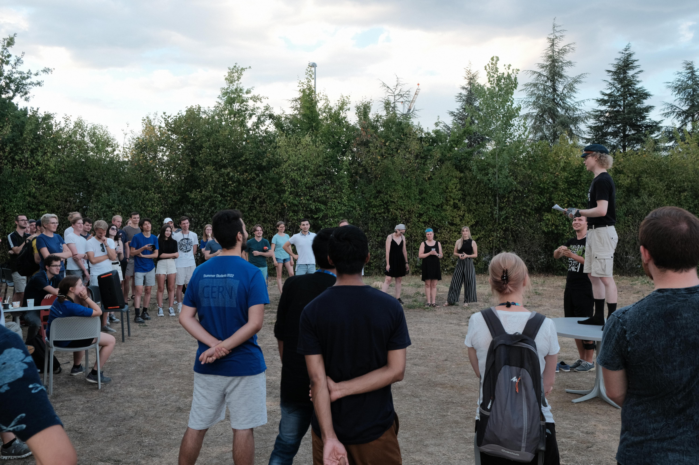

My summer at CERN 2022
My summer at CERN 2022#
Hi! I’m Santeri and I study Mathematics and Systems Sciences in Aalto University, Finland. In summer ‘22 I worked as a summer trainee for the Helsinki Institute of Physics at CERN. CERN, The European Organization for Nuclear Research, is one of the largest scientific projects in the world. Thousands of scientists and engineers work with a goal of studying the fundamental constituents of matter among other topics. My project was about open data in education. I made and translated study materials that high school teachers could use at their classes. Additionally, I held workshops for teachers and other summer students.
The summer at CERN was a truly eye-opening experience. I had never been away from Finland for that long, but this summer I spent three months abroad. Having some distance to home allowed me to break my old habits and throw myself to new challenges. It also gave me a chance to get to know other people at CERN. In my first week at CERN I got to familiarize myself with its different experiments with Finnish teachers. Each week, CERN has teachers coming from some country to learn about particle physics and get them to pass on the knowledge to their students. It just so happened that the first teacher programme was organized for Finnish teachers, just at the week that I started my summer at CERN! Therefore, during my first week I got to learn about the research that CERN does and visit some of its many buildings. It was a great orientation to what I would experience in the summer.
 Me and the Finnish teachers in Geneva.
Me and the Finnish teachers in Geneva.
In my work, most of the time went to writing and translating study materials. The materials are on the Jupyter Notebook Environment, which enables combining text, code and photos into the same document. I focused especially on materials about particle physics, using the data released by the CMS detector at CERN. The code in the exercises is written in Python. I also made intro materials for data-analysis, in which case the data didn’t have to be about any specific topic. Outside particle physics, open data can of course be used in many other subjects as well, such as in biology and geology.
My work during the summer was flexible. I had a lot of freedom in choosing what exactly I would work on, and I also had flexible working hours. This independence surprised me but I liked the fact that I had so much freedom with respect to my work. According to my knowledge, the summer student experience is held to a great importance at CERN. People want you to learn relevant things for your career, and you’re encouraged to always learn more. In my summer an especially big and rewarding challenge was planning and organizing workshops. I held three workshops during the summer: two for international teachers as a part of a teacher programme, and one for other summer students. I had a lot of responsibility at planning the workshops and I learned a lot in the process. Although not everything went always as planned, it was motivating to hear how some participants got motivated about using open data in teaching. You can read more about the workshops in this blog post.
In addition to working with my project, I spent time watching lectures made for summer students at CERN. The lectures taught some of the basic concepts of particle physics, the mechanisms of the scientific instruments used in high energy physics, and other related things. Although many lectures were quite difficult for me, they gave me a good overview of what research at CERN is about. We also got to visit different experiments, such as the CMS and ATLAS.
There are over 300 summer students at CERN during summer and I only got to know a small portion of them. The large number of students means that there are lots of opportunities to get to know others by e.g. organizing parties and trips together. Through the experiences we had together, I got lots of friends from Finland and other countries. One of the greatest things at CERN is indeed its internationality. At the same table you can find people from Chile, Jordan, and Bulgaria, among others. Getting to know other cultures is always interesting, and so is telling about your own culture. One of the greatest experiences during the summer was when we Finnish summer trainees organized a Mölkky-tournament for other summer students, and over 60 people participated in it. Mölkky is a popular Finnish outdoor game which we played a lot during the summer.
 Mölkky tournament brought many nationalities to fight for the CERN championship.
CERN is situated near Geneva, at the border of Switzerland and France. I crossed the border every day while cycling from my home on the French side to work. This illustrates how easy it is to go from Geneva to other places in Europe: everything feels close compared to isolated Finland. In spring I bought an Interrail-ticket that enabled me to travel for free or very cheaply by train through the summer. One of the places I went to was Interlaken, where I got to see the beautiful Swiss mountains. In Annecy, France, I got to experience paragliding and the largest pyrotechnic show in Europe. I also went on a road trip with my mom and brother to Italy, Monaco and Southern France. All this traveling felt especially great since I hadn’t traveled much for a long time because of the COVID pandemic. On the other hand, Geneva during summer was great. The water in Lake Geneva is clystar clear, and I swam in it multiple times in order to bear the European heat wave. Additionally, I visited free concerts in Geneva to enjoy live music, a treat I had much missed during the pandemic.
My summer at CERN was unforgettable, and I have grown a lot as a person. I have made friends all over the world and gotten to experience things I never would have learned in Finland. If you are in a position to apply to CERN as a summer student, I strongly recommend it. If you get chosen, you might very well get to experience one of the most memorable summers of your life.